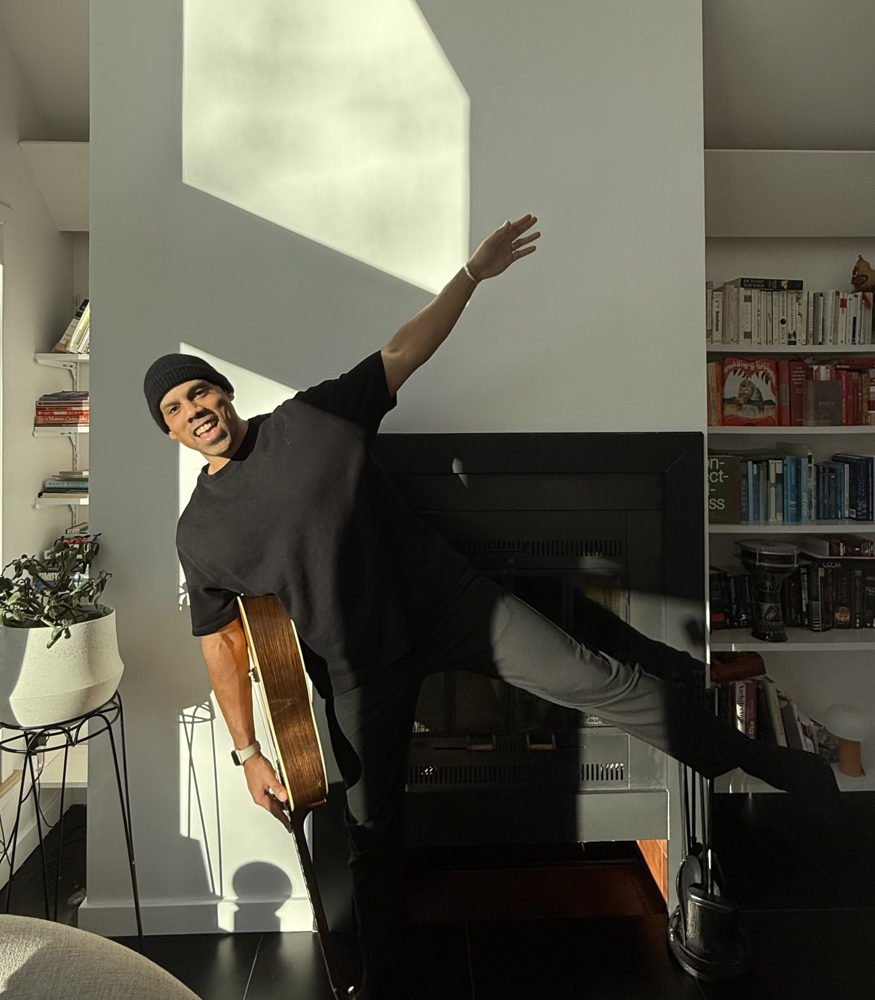

Hi! I'm Matthew (Matt is fine too). I live and grew up in Massachusetts but I'm half 🇨🇻 and half 🇵🇹.
I'm a software engineer, musician, and aspiring researcher. I'm using this class to explore building physical things. My project ideas are inspired by merging musical and engineering passions.
This summer I'm also studying the Neuroscience of Learning and researching if we can improve upon the standard of how musical audiation has been measured in psychological studies since 1919 (notwithstanding minor innovation in 1989). Hint: It doesn't use relative or absolute pitch at all!
I think music should be accessible for all, and plays a huge role in our culture, well-being, and long-term intellectual potential.